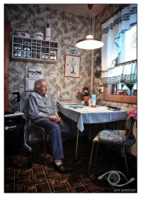

Nelly Juul
K, #28351, f. 13 februar 1911, d. 31 januar 2005
Foreldre
Biografi
Nelly Juul ble født den 13 februar 1911 Sparbu, Steinkjer, Nord-Trøndelag. Hun døde den 31 januar 2005. Hun ble gravlagt den 4 juni 2005 på/i Henning kirkegård, Steinkjer, Nord-Trøndelag.
Nelly Juul had reference number 42832.
| Sist redigert |
20 februar 2014 00:00:00 |
| Slektskap | 4-menning 2 ganger forskjøvet til Håkon Wahl |
Johan Juul
M, #28352, f. 10 november 1912, d. 23 juni 2006
Foreldre
Biografi
Johan Juul ble født den 10 november 1912 Sparbu, Steinkjer, Nord-Trøndelag. Han giftet seg med
Inga Anna Klevmo. Han døde den 23 juni 2006. Han ble gravlagt den 30 juni 2006 på/i Henning kirkegård, Steinkjer, Nord-Trøndelag.
Johan Juul had reference number 42833.
| Sist redigert |
20 februar 2014 00:00:00 |
| Slektskap | 4-menning 2 ganger forskjøvet til Håkon Wahl |
Magnhild Juul
K, #28353, f. 17 juli 1914, d. 20 desember 2016
Foreldre

Magnhild Juul Lund
Biografi
Magnhild Juul ble født den 17 juli 1914 Sparbu, Steinkjer, Nord-Trøndelag. Hun giftet seg med
Terje Fridtjof Lund omtrent 1955. Hun døde den 20 desember 2016 på/i Oslo. Hun ble gravlagt den 17 juli 2017 på/i Nordstrand kirkegård, Oslo.
Magnhild Juul was also known as Magnhild Juul Lund. Hun had reference number 42834. Som 15-åring ramlet Magnhild gjennom en trebru og brakk ryggen. Dette medførte ryggsmerter resten av livet. Vel fylt 15 år dro Magnhild sørover og jobbet som barnepike hos en familie i Oslo. Deretter begynte hun i serveringsbransjen, og ble der i 30 år. Som servitør i Oslo Handelstands Forening fikk hun servere mange profilerte mennesker, deriblant kong Harald, da han fortsatt var prins, og kong Olav. Hun og
Terje Fridtjof Lund flyttet til Brattlikollen, Oslo, i 1956. Hun. bodde hjemme enda som snart 102-åring.
| Sist redigert |
11 august 2025 14:02:33 |
| Slektskap | 4-menning 2 ganger forskjøvet til Håkon Wahl |
Asbjørg Juul
K, #28354, f. 18 november 1919, d. 19 juni 1985
Foreldre
Familie: Jarle Druglimo (f. 20 november 1919)
| Sønn | Jon Arne Druglimo+ |
| Datter | Marie Synnøve Druglimo+ |
| Sønn | Jostein Druglimo |
Biografi
Asbjørg Juul ble født den 18 november 1919 Sparbu, Steinkjer, Nord-Trøndelag. Hun giftet seg med
Jarle Druglimo. Hun døde den 19 juni 1985. Hun ble gravlagt på/i Meldal kirkegård, Meldal, Sør-Trøndelag.
Asbjørg Juul was also known as Asbjørg Druglimo. Hun had reference number 42835.
| Sist redigert |
20 februar 2014 00:00:00 |
| Slektskap | 4-menning 2 ganger forskjøvet til Håkon Wahl |
Lars Juul
M, #28355, f. 2 januar 1922, d. 3 oktober 2009
Foreldre
Familie: Aud Langlie
| Sønn | Asle Reidar Juul+ |
| Datter | Kristin Juul+ |
| Sønn | Roar Juul |
Biografi
Lars Juul ble født den 2 januar 1922 Sparbu, Steinkjer, Nord-Trøndelag. Han giftet seg med Aud Langlie. Han døde den 3 oktober 2009 på/i Steinkjer, Nord-Trøndelag. Han ble gravlagt den 9 oktober 2009 på/i Steinkjer kirkegård, Steinkjer, Nord-Trøndelag.
Lars Juul had reference number 42836. Han bodde på/i Steinkjer, Nord-Trøndelag.
| Sist redigert |
9 mars 2026 10:52:02 |
| Slektskap | 4-menning 2 ganger forskjøvet til Håkon Wahl |
Olav Juul
M, #28356, f. 3 juni 1926, d. 23 juni 2010
Foreldre
Familie: Odny Øyasæter
| Datter | Åse Juul+ |
| Sønn | Kjell Arne Juul |
| Sønn | Jan Helge Juul+ |
| Sønn | Øystein Juul |
Biografi
Olav Juul ble født den 3 juni 1926 Sparbu, Steinkjer, Nord-Trøndelag. Han giftet seg med Odny Øyasæter. Han døde den 23 juni 2010. Han ble gravlagt på/i Ski kirkegård, Ski, Akershus.
Olav Juul had reference number 42837. Han. var miltær. Han var militærutdannet. i Oslo.
| Sist redigert |
29 september 2022 17:53:23 |
| Slektskap | 4-menning 2 ganger forskjøvet til Håkon Wahl |
Erling Nossum
M, #28357, f. 22 juli 1905, d. 13 oktober 1988
Familie: Astrid Juul (f. 29 april 1909, d. 5 mai 2010)
| Datter | Elsa Nossum+ |
| Sønn | Asbjørn Magne Nossum+ |
Biografi
Erling Nossum ble født den 22 juli 1905 Sparbu, Steinkjer, Nord-Trøndelag. Han giftet seg med
Astrid Juul. Han døde den 13 oktober 1988 på/i Steinkjer, Nord-Trøndelag. Han ble gravlagt på/i Steinkjer kirkegård, Steinkjer, Nord-Trøndelag.
Erling Nossum had reference number 42860.
| Sist redigert |
9 mai 2025 09:50:17 |
Inga Anna Klevmo
K, #28364, f. 28 september 1918, d. 1 februar 2009
Familie: Johan Juul (f. 10 november 1912, d. 23 juni 2006)
Biografi
Inga Anna Klevmo ble født den 28 september 1918 Snåsa, Nord-Trøndelag. Hun giftet seg med
Johan Juul. Hun døde den 1 februar 2009. Hun ble gravlagt den 7 juni 2009 på/i Henning kirkegård, Steinkjer, Nord-Trøndelag.
Inga Anna Klevmo was also known as Inga Anna Juul. Hun had reference number 42867.
| Sist redigert |
20 februar 2014 00:00:00 |
Terje Fridtjof Lund
M, #28367, f. 11 november 1914, d. 18 desember 1995
Biografi
Terje Fridtjof Lund ble født den 11 november 1914 Tromsø, Troms. Han giftet seg med
Magnhild Juul omtrent 1955. Han døde den 18 desember 1995. Han ble gravlagt på/i Nordstrand kirkegård, Oslo.
Terje Fridtjof Lund had reference number 42870. Han and
Magnhild Juul flyttet til Brattlikollen, Oslo, i 1956.
| Sist redigert |
18 juli 2016 00:00:00 |
Jarle Druglimo
M, #28369, f. 20 november 1919
Familie: Asbjørg Juul (f. 18 november 1919, d. 19 juni 1985)
| Sønn | Jon Arne Druglimo+ |
| Datter | Marie Synnøve Druglimo+ |
| Sønn | Jostein Druglimo |
Biografi
Jarle Druglimo ble født den 20 november 1919 Meldal, Sør-Trøndelag. Han giftet seg med
Asbjørg Juul.
Jarle Druglimo had reference number 42872.
| Sist redigert |
20 februar 2014 00:00:00 |
{kind=link}